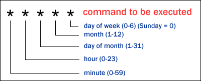

Mac Operation
create bootable mac usb
- In Application Download High Sierra apps
- Format usb stick with mac external file system
- In terminal:
sudo /Applications/Install\ macOS\ High\ Sierra.app/Contents/Resources/createinstallmedia --volume /Volumes/Untitled --applicationpath /Applications/Install\ macOS\ High\ Sierra.app
brew install with proxy
export ALL_PROXY=127.0.0.1:8087
brew install chromedriver
set HostName
- set /etc/hosts
- set hostname
sudo scutil --set ComputerName newname
sudo scutil --set LocalHostName newname
sudo scutil --set HostName newname
dscacheutil -flushcache
find and replace in command line
- replace
find ./ -type f -print0|xargs -0 sed -ie 's/{% asset_img /![Alt Text]({static}\/images\/108class\//g'
find ./ -type f -print0|xargs -0 sed -ie 's/^---$//g'
find . -name '*.md' -type f -exec sed -i '' -e 's/\\n//' {} \;
find . -name '*.css' -type f -exec sed -i '' -e 's/googleapis/useso/' {} \;
- delete
find . -name '*md' -type f -exec sed -i '' -e '/^$/d' {} \;
Autostart
- /Library/LaunchDaemons/com.localhost.hexo.plist
- Check script error with plutil
plutil -lint /Library/LaunchDaemons/com.localhost.hexo.plist
* Set up log to /var/log/system.log
Cron
- command
注意: crontab 在用户环境中不能够直接用crontab -e编辑，因为无法保存。
~ su -
# root # crontab -u walter -e

- MacMini
cron file for walter
15 09 * * 1-5 walter /usr/bin/afplay ~/.stocknotice/alert915.m4a
30 11 * * 1-5 walter /usr/bin/afplay ~/.stocknotice/closeram.m4a
55 12 * * 1-5 walter /usr/bin/afplay ~/.stocknotice/openpm.m4a
00 15 * * 1-5 walter /usr/bin/afplay ~/.stocknotice/closepm.m4a
- 关于virtualenv python的演示
#!/bin/bash
export LC_ALL=zh_CN.UTF-8
export LANG=zh_CN.UTF-8
PATH=/bin:/usr/sbin:/usr/bin
PATH=~/.bin:/usr/local/bin:/usr/local/mysql/bin:$PATH
source ~/.bin/quanta.sh
cd ~/quanta/strategy/small_mkval/
# ~/.virtualenvs/quanta/bin/python data_prepare.py
python data_prepare.py
- spyder
export WORKON_HOME=~/.virtualenvs
source ~/.virtualenvs/quanta/bin/activate
python ~/bin/spyder/bootstrap.py > /dev/null 2>&1 &
Virtual Box
-
Set Virtual Box resolution for Mac or Linux
- One Screen
~$ VBoxManage controlvm "Name of Virtual Machine" setvideomodehint 1920 1080 32
- Multiscreen
Add second monitor first in the setting menu of Virutal Box, The First screen number is 0 and the second is 1. ps Stock is the virtual machine name. then,
~$ VBoxManage controlvm Stock setvideomodehint 2560 1440 32 0
~$ VBoxManage controlvm Stock setvideomodehint 1920 1080 32 1
Create git server
Server Computer:
- Add a new user: git
$ create a new user named 'git'
$ enable web sharing
$ git config receive.denyCurrentBranch updateInstead
- Initialise a git directory
$ mkdir something.git
$ cd something.git
$ git init --bare
Client Computer
$ git clone ssh://localhost/~/something.git
Or: git is the username
$ git clone ssh://git@localhost/~/something.git
First push:
$ git push origin master
Mac change keyboard map
Key replace Application name: Karabiner
Webserver
(http://digitalshore.io/local-web-development-environment-apache-osx-10-11-el-capitan/)[http://digitalshore.io/local-web-development-environment-apache-osx-10-11-el-capitan/]
启动本机web服务器, 根地址/Library/WebServer/Documents
sudo apachectl start
sudo apachectl stop
sudo apachectl restart
建立 username.conf, username是用户账号
cd /etc/apache2/users
sudo vi username.conf
<Directory "/Users/username/Sites/">
AllowOverride All
Options Indexes MultiViews FollowSymLinks
Require all granted
</Directory>
username.conf 的Permissions 应该是：
sudo chmod 644 username.conf
ls -l username.conf
-rw-r--r-- root wheel 298 Jun 28 16:47 username.conf
打开/etc/apache2/httpd.conf
LoadModule authz_core_module libexec/apache2/mod_authz_core.so
LoadModule authz_host_module libexec/apache2/mod_authz_host.so
LoadModule userdir_module libexec/apache2/mod_userdir.so
LoadModule include_module libexec/apache2/mod_include.so
LoadModule rewrite_module libexec/apache2/mod_rewrite.so
LoadModule php5_module libexec/apache2/libphp5.so
Include /private/etc/apache2/extra/httpd-userdir.conf
打开 /etc/apache2/extra/httpd-userdir.conf
uncomment the following:
Include /private/etc/apache2/users/*.conf
启动apache
mkdir ~/Sites
sudo apachectl restart